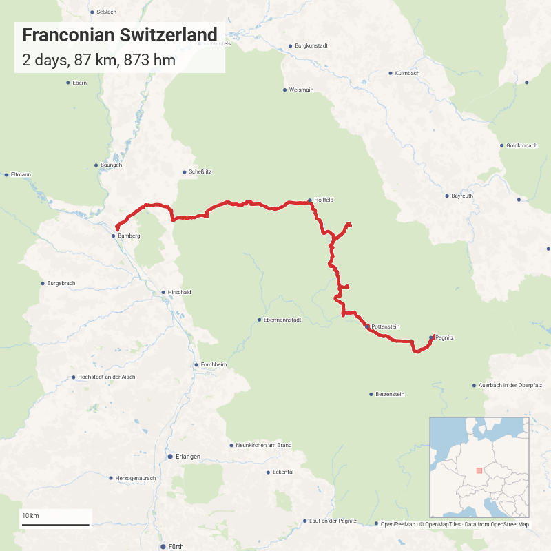

🇩🇪 Franconian Switzerland¶
Castles and caves, picturesque half-timbered villages, beautiful countryside and tons of breweries: Franconian Switzerland is a beautiful piece of earth.
Profile
⏱️ 2 days 📅 July 2023 🌐 fraenkische-schweiz.com
Start: 🚉 Pegnitz, 0:15h by train from Bayreuth
Dest.: 🚉 Bamberg
| Website | GPX | Distance | Ascend | Net Ascend | |
|---|---|---|---|---|---|
| Day 1: Mengersdorf | bikerouter.de | 41 km | 519 hm | -39 hm | |
| Day 2: Bamberg | bikerouter.de | 46 km | 354 hm | -140 hm |

Day 0: Bayreuth¶
You can use the opportunity to see Bayreuth - where history, art, and music meet.
Sights¶
You can find many things to see on bayreuth-tourismus.de. Here are the most important ones:
Food and accommodation¶
There are plenty of restaurants in Bayreuth. Metzgerei Rauch1 offers small dishes to-go. Manns Bräu2 is a traditional brewery-restaurant. At TortenSchmiede3 you can find good coffee and cakes. The Herzogkeller4 is a classic Bavarian beer garden on a small hill. Oskar5 also offers Bavarian classics in a central location.
The ibis budget6 offers small and functional, but clean rooms. It also has a great breakfast and is conveniently located near the main station.
Day 1: Pegnitz - Mengersdorf¶
The beautiful landscape and three major climbs will take your breath away. The way from the Castle Pottenstein down into the village is very steep - make sure your breaks are working.
Sights¶
- Pottenstein
- Tüchersfeld
- Rabenstein
- Castle
- Sophie Cave: If the Sophie Cave is (already) closed you can visit the Lugwig's Cave "across the street"
- Waischenfeld
Food and accommodation¶
The breweries along the way offer Franconian dishes and unique, fresh beer. I can recommend Brauerei Mager7 in Pottenstein and Gasthof Polsterbräu8 in Nankendorf.
Gutshof Mengersdorf9 offers comfortable and clean rooms in a historic building, great breakfast and friendly personnel: Highly recommended! Bicycle storage: In a (locked) barn.
Day 2: Mengersdorf - Bamberg¶
A low but steady rise until 3 km before Tiefenellern is rewarded with a speedy downhill. Landscape and villages remain beautiful - except for the outskirts of Bamberg.
If you are looking for a more sporty route, try this one (54.3 km | 553 hm | -139 hm).
Sights¶
- Hollfeld
- Litzendorf Church
- Seehof Palace
- Old Town of Bamberg: UNESCO World Heritage Site
Food and accommodation¶
Like on day one, you will find many breweries and restaurants along the way.
Gasthaus Grasser10 in Huppendorf has excellent beer and food, Brauerei Hönig11 in Litzendorf offers cold beer in a beautiful beer garden and Brauerei und Gaststätte Hölzlein12 in Lohndorf a cozy inner courtyard. In Bamberg you will find plenty of restaurants. A particularly good one is the Kachelofen13.
There are also many hotels in Bamberg. Hotel Andres14 offers clean rooms and good breakfast for a reasonable price. Bicycle storage: In the hotel garage.
Alternative tour¶
Initially I planned to overnight in Hollfeld, but had to change due to a lack of accommodations.
- Day 1: Pegnitz - Hollfeld
- Day 2: Hollfeld - Bamberg
-
Metzgerei Rauch, Munckerstraße 3, 95444 Bayreuth ↩
-
Manns Bräu, Friedrichstraße 23, 95444 Bayreuth ↩
-
TortenSchmiede, Ludwigstraße 10, 95444 Bayreuth ↩
-
Biergarten Herzogkeller, Hindenburgstraße 9, 95445 Bayreuth ↩
-
Oskar - Das Wirtshaus am Markt, Maximilianstraße 33, 95444 Bayreuth ↩
-
ibis budget Bayreuth ↩
-
Brauerei und Gaststätte Mager, Hauptstraße 17, 91278 Pottenstein ↩
-
Gasthaus Polsterbräu, Nankendorf 45, 91344 Waischenfeld ↩
-
Gutshof Mengersdorf, Mengersdorf 26, 95490 Mistelgau ↩
-
Gasthaus Grasser, Huppendorf 25, 96167 Königsfeld ↩
-
Brauerei Hönig, Ellerbergstraße 15, 96123 Litzendorf ↩
-
Brauerei und Gaststätte Hölzlein, Ellertalstraße 13, 96123 Litzendorf ↩
-
Kachelofen, Ob. Sandstraße 1, 96049 Bamberg ↩
-
Hotel Andres, Heiliggrabstraße 1, 96052 Bamberg ↩